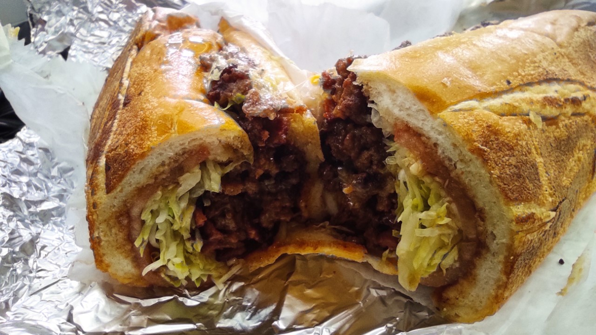

Chopped Cheese

Ingredients
- 2 pounds ground beef
- 1 white onion, chopped
- 4 clove garlic, chopped
- 1 teaspoon kosher salt
- 1/2 teaspoon black pepper
- 1 tablespoon Worcestershire sauce
- 6 hoagie or bolillo rolls
- 12 slices American cheese
- 6 tablespoons mayonnaise
- Shredded iceberg lettuce, for serving
- tomato slices, for serving
Steps
- Cook the ground beef
- Add the onions, garlic, and seasoning
- Toast the buns
- Combine the cheese and ground beef
- Place the roll on the ground beef
- Finish the sandwich and serve